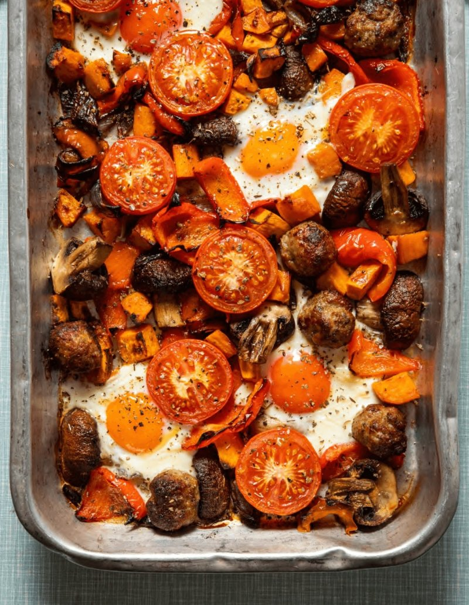

The Hairy Breakfast Traybake
Feeling guilty eating a big ol' full english. Well...no more!
Info
- Serves: 4
- Prep Time: 15 minutes
- Cooking Time: 35 minutes
- Calories: 341/serving
Ingredients
1 onion, cut into wedges
- 1 large red epper, cut into strips
- 1 sweet potato, peeled and cut into cubes
- 2 tsp olive oil
- 4 sausages, skinned, halved and rolled into balls
- 4 medium tomatoes, halved
- 4 eggs
- 1 tsp dried sage
- sea salt and black pepper
Method
- Preheat oven to 200°C/Fan 180°C/Gas 6
-
Put onion, red pepper and sweet potato in a large roasting tin. Drizzle the teaspoon of olive olive
and mix thoroughly, then season with salt and pepper. Add the sausage balls and roast in the oven for 25 minutes.
-
Toss in the mushrooms in the remaining oil and add them to the tin
with the tomatoes. Roast for a further 5 minutes.
-
Make 4 dips in the veg and add the eggs. Sprinkle over the sage, season the eggs with salt and roast for a further 5 mintues.
The egg whites should be just set.
- Serve at once
Back to home